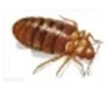
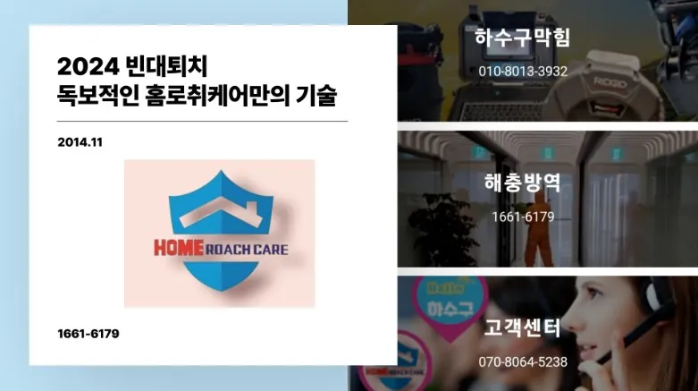
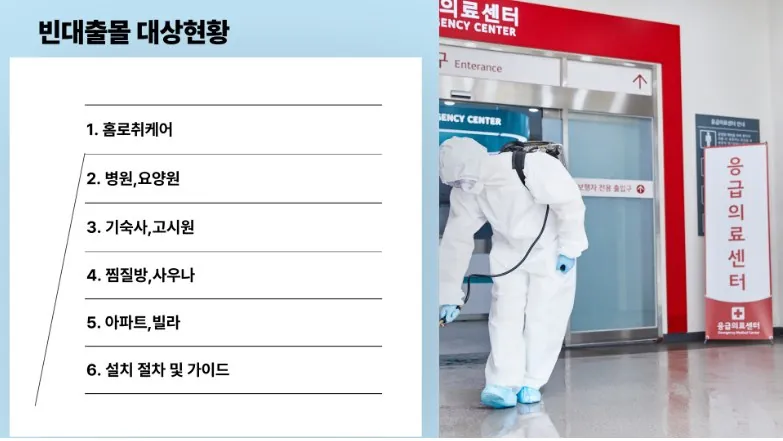
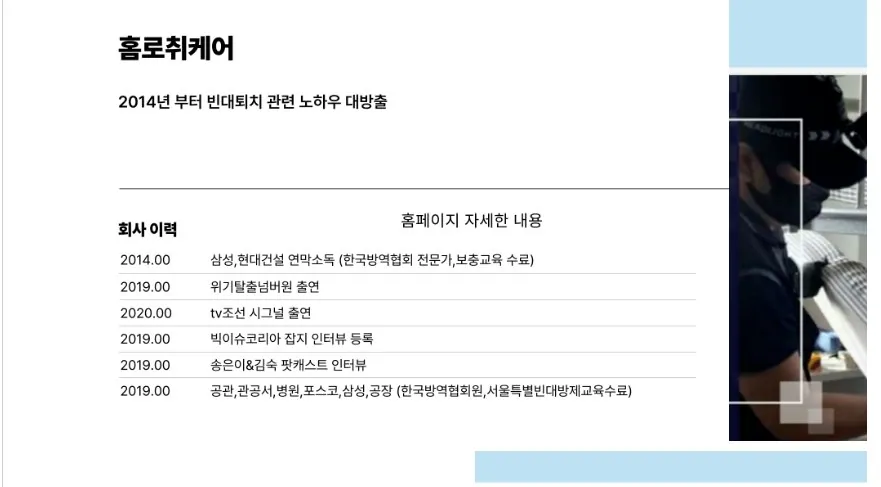
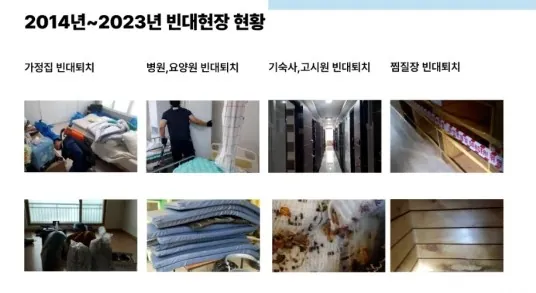
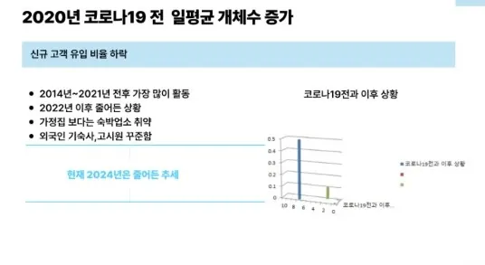
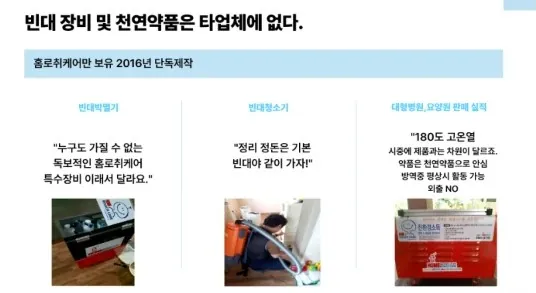
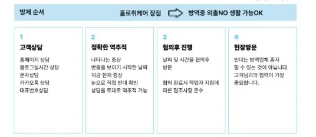
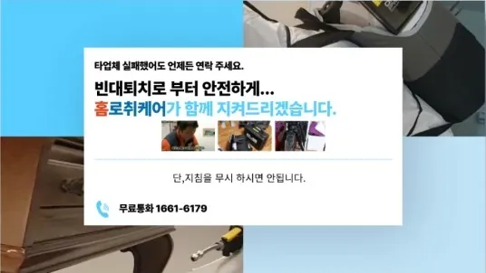

빈대
| 생김새 | 크기 | 활동시기 및 서식장소 | 습성/생활 |
|---|---|---|---|
 빈대 | 몸길이 6.5~9mm | 집안, 새 둥지, 박쥐 동굴, 집에서 기르는 가축들의 몸 | 먹이를 먹기 전의 몸길이는 6.5~9mm이고, 몸빛깔은 대개 갈색이다. 그러나 먹이를 먹은 후에는 몸이 부풀어오르고 몸빛깔은 붉은색이 된다. 몸은 편평하고 약간 사각형으로 보이며 머리는 작다. 촉각(더듬이)은 겹눈 사이에서 올라와 있다. 모두 4마디로, 제1마디는 짧고 제2마디가 가장 길며 다른 것은 실 모양이다. 주둥이는 4마디이다. 작은턱은 2개의 관으로 되어 있는데 등쪽은 식구(食溝), 배쪽은 타액구(唾液溝)이다. 이 관으로 기주를 찔러 그 피를 빨아먹는다. 큰턱은 작은턱 바깥쪽에 접해 있으며, 길고 가는 창 모양으로 끝에 미세한 이빨이 1줄 있다. 앞가슴등판은 편평하며 옆가두리는 넓고 편평하다. 반딱지날개는 판 모양으로 작고 뒷날개는 없다. 배부는 8마디로 편평하고 둥글며 크다. 집안, 새 둥지, 박쥐 동굴 등을 은신처로 삼으며, 이 밖에도 집에서 기르는 가축들의 몸에도 발생한다. 암컷은 일생 동안 200여 개의 알을 낳으며, 알의 표면은 거칠다. 유충은 6~17일 안에 부화하며 5번의 달피를 통해 완전히 성숙하는 데 10주 정도가 걸린다. 밤에 주로 활동한다. 집안에 사는 개체는 긴 주둥이로 사람을 찌르고 피를 빨며 불쾌한 가려움을 준다. 몸에 많은 개체가 발생하면 수면부족을 일으킨다. 나병·Q열·브루셀라병 등을 옮기는 것으로 의심되지만 사람에게 걸리는 질병은 옮기지 않는 것으로 보인다. 주거환경이 청결해지면서 볼 수 없는 해충이 되었다. 세계 공통종이다. |







